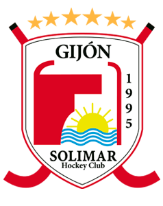

Manual de uso
de la app del Telecable HC
Estadística de partidos, entrenos y análisis de vídeo
Actualizado el 22/11/20261Primeros pasos
La app del Telecable HC sirve para llevar la estadística de los partidos (minutos de cada jugadora, goles, faltas, tarjetas, posesión…), planificar los entrenos y analizar vídeos. Funciona en tablet, móvil y ordenador (Android, iPhone/iPad y Windows) y también sin internet.
Dirección de la app: https://telecablehc.github.io
Instalar la app
No hace falta tienda de aplicaciones: se instala desde el navegador y queda con su icono, como cualquier app.
Tablet o móvil Android (Samsung incluido)
- Abre la dirección de la app en Chrome (o en Samsung Internet).
- Toca el menú ⋮ (o ≡ en Samsung Internet) y elige Instalar aplicación o Añadir a pantalla de inicio.
- Abre la app desde el icono del escudo.
iPhone o iPad
- Abre la dirección en Safari.
- Toca Compartir (el cuadrado con la flecha hacia arriba) y después Añadir a pantalla de inicio.
Ordenador con Windows
- Abre la dirección en Edge o Chrome.
- Pulsa el icono de instalar que aparece a la derecha de la barra de direcciones (o menú … → Aplicaciones → Instalar).
Iniciar sesión
Al abrir la app por primera vez aparece la pantalla de acceso. Entra con tu email y contraseña. Solo pueden entrar los emails autorizados por el club; si tu email no está en la lista, la app te lo dirá: pide a la administradora que te añada.
- ¿No tienes cuenta? Crear cuenta: la primera vez, crea la contraseña. Recibirás un email para confirmarla.
- He olvidado la contraseña: escribe tu email y te llega un enlace para cambiarla.
Con la sesión iniciada, todo lo que guardes (partidos, entrenos, análisis…) se comparte con el resto de dispositivos del equipo.
Sin internet y actualizaciones
- La app se abre siempre desde la copia guardada en el dispositivo: funciona en pabellones sin cobertura. Lo que guardes sin internet se sube solo cuando vuelve la conexión.
- Para que funcione sin internet, ábrela al menos una vez con internet en ese dispositivo. En ⚙ Ajustes → Sin conexión puedes comprobar si está lista.
- Actualizaciones: cuando hay una versión nueva, se descarga sola en segundo plano y aparece la siguiente vez que abres la app. Para tenerla ya: abre la app con internet, ciérrala del todo y vuelve a abrirla.
El punto de sincronización
Junto al escudo, arriba a la izquierda, hay un punto de color:
| Color | Qué significa |
|---|---|
| Verde | Todo sincronizado con la nube. |
| Ámbar | Sincronizando o con cambios pendientes de subir. |
| Gris | Sin conexión. Se subirá todo al volver internet. |
| Rojo | Error al sincronizar. El motivo aparece en ⚙ Ajustes → Cuenta. |
2La pantalla de inicio y la navegación
La pantalla de inicio es un índice con tres botones:
- Partidos: estadística de los partidos, calendario y totales (capítulos 3 a 6).
- Entrenos: planificación, biblioteca de ejercicios y minutos de los entrenos (capítulo 7).
- Análisis - Vídeo: marcar acciones, clips y dibujos sobre vídeos (capítulo 8).
En la barra de arriba:
- ‹ vuelve a la pantalla anterior.
- ↶ Deshacer: anula el último cambio del partido o entreno en curso (por ejemplo, un gol apuntado por error).
- ⚙ Ajustes (capítulo 9).
3Partidos: el menú y el calendario
Al entrar en Partidos verás, de arriba abajo:
- Próximo partido (o Continuar partido si hay uno en curso): un toque y empiezas a registrar esa jornada con el rival, la fecha, la hora y el pabellón ya rellenados.
- Totales: la suma de todos los partidos (capítulo 6).
- Calendario de la OK Liga Iberdrola 2026/2027: un botón por jornada.
- Historial de partidos guardados.
- + Otro partido (amistoso, copa…): para partidos que no están en el calendario.
El calendario
- 🏠 partido en casa · ✈️ partido fuera.
- Color de las jornadas cerradas: victoria, empate, derrota.
- Toca una jornada jugada para ver su resumen; toca una pendiente para empezar a registrarla.
Partidos cerrados e incompletos (resultado oficial de la RFEP)
El marcador de la app tiene que coincidir siempre con el resultado oficial de la RFEP. Un partido solo está cerrado (y se pinta de verde, naranja o rojo) cuando coinciden. Si no, sale rayado en gris con un aviso:
| En el calendario | Qué pasa | Qué hacer |
|---|---|---|
| ✓ 5-2 (en color) | Cerrado: la app y la RFEP coinciden. | Nada. |
| ⚠ Incompleto · App 1-1 · RFEP 2-1 | El marcador de la app no coincide con el oficial. | Corrige los goles en Editar datos → Eventos, o el resultado oficial si estaba mal escrito. |
| ⚠ Incompleto · falta RFEP | Hay datos en la app, pero falta el resultado oficial. | Escríbelo en Editar datos → Datos → Resultado oficial (RFEP). |
| ⚠ Sin datos | El partido ya se jugó y no se registró en la app. | Regístralo (por ejemplo, desde el vídeo con Sumar al marcador). |
El resultado oficial se copia a mano del acta de la RFEP: la RFEP no autoriza que otras aplicaciones extraigan sus datos de forma automática. El botón Ver en la RFEP ↗ abre su página para consultarlo.
4Durante el partido
Convocatoria
Antes de empezar, elige las convocadas (máximo 10 de la plantilla). La app propone las del partido anterior. Toca Confirmar. Puedes cambiarla después en la pestaña Datos → Cambiar convocatoria.
Reloj, pista y banquillo
- ▶ pone en marcha el reloj; el mismo botón lo para (❚❚). Páralo cada vez que el árbitro pare el tiempo.
- Toca una jugadora del Banquillo para meterla en pista; tócala en En pista para sacarla. Como máximo hay 5 en pista (4 jugadoras y la portera). Los minutos de cada una se cuentan solos mientras está en pista y el reloj corre.
- Posesión: toca Nosotras o Rival cuando cambie la posesión. Se muestra el porcentaje de cada equipo.
- FE: faltas de equipo de cada equipo en la parte actual.
Registrar acciones
En la pestaña Pista están los botones de las acciones. Al tocar uno, la app pregunta lo necesario. Al tocar la jugadora se guarda directamente.
| Botón | Qué pregunta |
|---|---|
| Gol a favor | Quién marca. Se guarda también el cinco que estaba en pista. |
| Gol en contra | Número de la rival (opcional). |
| Falta nuestra | Quién comete la falta. |
| Falta rival | Nada: se suma a sus faltas de equipo. |
| Falta directa / Penalti | Tipo, a favor o en contra, gol o fallado y la lanzadora. Si es gol, se suma también al marcador. |
| Tarjeta | Equipo, azul (2 min) o roja (4 min) y la jugadora sancionada. |
- Las sanciones activas aparecen bajo el reloj con su tiempo. Terminan solas al cumplirse; se pueden terminar antes tocándolas. Si el equipo con una tarjeta azul encaja un gol, la app pregunta si la sanción termina con ese gol.
- La app calcula la superioridad (power play) y la inferioridad (under play) con el resultado al empezar y al terminar.
- ¿Te has equivocado? Pulsa ↶ (Deshacer) o borra el evento en la pestaña Eventos.
Las pestañas
- Pista: reloj, botones de acciones, en pista y banquillo.
- Eventos: lista de todo lo registrado, con su minuto; cada evento se puede borrar. Con + Añadir evento con minuto se añade algo que se olvidó apuntar, indicando la parte y el minuto (por ejemplo, 12:30).
- Resumen: la hoja de estadística completa, como la hoja Excel del club, con Imprimir / PDF y CSV minutos.
- Datos: rival, competición, jornada, fecha, hora, pabellón, convocatoria y observaciones.
Fin de parte y terminar
- Fin de parte: cierra la parte y pasa a la siguiente (o a la prórroga).
- Terminar: guarda el partido en el historial y muestra el resumen.
5Después del partido: resumen y correcciones
Toca un partido del calendario o del historial para abrir su resumen. Arriba aparece si el partido está cerrado (coincide con la RFEP) o incompleto y por qué (ver capítulo 3). Abajo tienes:
- Imprimir / PDF y CSV minutos (los minutos de cada jugadora para Excel).
- Editar datos: corregir todo a mano (ver abajo).
- Reabrir: el partido vuelve a la pantalla de juego para corregirlo allí; los cambios se guardan al pulsar Terminar (o se anulan con Descartar cambios).
- Borrar: elimina el partido.
Editar datos: corregirlo todo a mano
La ventana Editar partido tiene tres pestañas. Nada cambia hasta que pulsas Guardar; Cancelar lo deja todo como estaba.
1. Datos
Equipo, rival, competición, jornada, número de partido, fecha, hora, pabellón, resultado oficial (RFEP) (solo en los partidos del calendario; avisa en el momento si coincide o no con el marcador de la app), convocadas y observaciones. Las jugadoras que tienen minutos no se pueden quitar de la convocatoria (primero pon sus minutos a 0).
2. Minutos
Los tiempos se escriben como 12:30 (minutos:segundos) o solo los minutos (12).
- Partes y posesión: duración real de cada parte y posesión nuestra y del rival.
- Minutos de cada jugadora, parte por parte. El total se actualiza mientras escribes. En el resumen, esa parte aparecerá como «corregido a mano» en lugar de las entradas y salidas.
- Cinco inicial de cada parte (máximo 5).
3. Eventos
Goles, faltas, faltas directas / penaltis y tarjetas. Cada uno tiene Corregir (parte, minuto, jugadora, tipo, gol o fallado…) y Borrar. Con ＋ Añadir evento se añade uno que falte.
Al guardar, la app recalcula el marcador, el orden de los eventos y las superioridades/inferioridades, y el resumen y los Totales se actualizan.
6Totales
En Partidos → Totales está la suma de todos los partidos guardados:
- Equipo: partidos ganados, empatados y perdidos, goles a favor y en contra, posesión media, faltas de equipo, faltas directas y penaltis (con su eficacia), tarjetas, superioridades e inferioridades.
- Jugadoras: convocatorias, partidos jugados, veces titular, minutos, media por partido y porcentaje del tiempo, goles, faltas y tarjetas.
- Lista de partidos incluidos, con fecha, rival y resultado.
Se actualiza sola cada vez que guardas o corriges un partido.
↑ Índice7Entrenos
Entreno sin plan
En Entrenos, Entreno sin plan abre la pantalla de juego para solo contar los minutos de las jugadoras (todas convocadas). Funciona igual que en un partido: ▶, meter y sacar jugadoras y Terminar.
Planificar un entreno
- Toca ＋ Planificar un entreno.
- Rellena la fecha, la hora y el objetivo (por ejemplo, «salida de presión»).
- Añade ejercicios con ＋ Nuevo ejercicio o ＋ Desde la biblioteca. Cada ejercicio tiene nombre, duración, tipo (calentamiento, técnica, táctica, físico, porteras, juego, vuelta a la calma), descripción y dibujo. La duración total del plan se suma sola.
- Añade notas (material, grupos…).
Botones del plan: ▶ Empezar entreno (abre la pantalla de juego unida al plan), Imprimir / PDF, Duplicar y Borrar plan. El entreno del día aparece arriba del menú de Entrenos.
Biblioteca de ejercicios
Guarda ejercicios para reutilizarlos en otros planes. Se filtran por tipo. Al crear un ejercicio dentro de un plan, marca Guardar también en la biblioteca para tenerlo también allí.
Dibujar en la pista y ejercicios con movimiento
En un ejercicio, toca ✏️ Dibujar en la pista. Herramientas:
| Herramienta | Para qué |
|---|---|
| ● Nuestra P Portera ● Rival • Bola ▲ Cono | Toca en la pista para colocarlos. |
| → Movimiento ⇢ Pase ⇒ Tiro | Arrastra desde el inicio hasta el final de la flecha (en línea recta). |
| 〰 Conducción | A mano alzada: dibuja con el dedo el recorrido de la jugadora con la bola, por ejemplo un slalom entre los conos. En la animación, la jugadora sigue ese recorrido con la bola por delante. Si el trazo es casi recto, queda como una conducción recta. |
| ✋ Mover | Arrastra un elemento para moverlo. En las flechas, arrastra un extremo para cambiarlo o el medio para mover la flecha entera (también el recorrido de una conducción). |
| ✕ Borrar · ↶ Deshacer · 🗑 Limpiar | Borrar un elemento, deshacer el último o borrarlo todo. |
Ejercicios con movimiento (vídeo)
- Cada flecha tiene un paso (1, 2, 3…). Las flechas del mismo paso se mueven a la vez; los pasos van uno detrás de otro. Elige el paso con −/+ antes de dibujar la flecha, o cámbialo después con Poner paso.
- Las jugadoras y la bola siguen sus flechas: la bola acompaña a quien conduce y viaja en los pases y tiros.
- Velocidad: con − / + eliges a qué velocidad se mueven las jugadoras y la bola (de 0,25× a 2×; 1× es la normal). Se guarda con el ejercicio y se usa también en el vídeo descargado. Si cambias la velocidad mientras lo ves, se aplica al momento.
- ▶ Ver reproduce el ejercicio. Los ejercicios con movimiento se guardan como 🎬 Vídeo.
- ⬇ Vídeo descarga el ejercicio en vídeo (MP4 o WebM) para compartirlo.
8Análisis de vídeo
Sirve para marcar las acciones de un vídeo, crear clips por tema y dibujar sobre la imagen. Las marcas, los clips y los dibujos se sincronizan con el equipo.
Crear un análisis
En Análisis - Vídeo toca ＋ Nuevo análisis: título, fecha, partido del calendario (opcional; rellena el título y la fecha), teclado y de dónde es el vídeo:
| Fuente | Cómo funciona |
|---|---|
| Archivo (tablet / ordenador) | Eliges el archivo de vídeo del dispositivo. Todo funciona. El vídeo no se sube a la nube (es muy grande): en cada dispositivo hay que volver a elegir el archivo. |
| Enlace (tiivii) 🔗 | Pegas el enlace del vídeo en tiivii (uno por partido, por ejemplo https://kennicut.tiivii.com/player/2204). El vídeo se ve dentro de la app con todas las funciones y, como solo se guarda el enlace, está en todos los dispositivos. Necesita internet. Solo sirve con enlaces que se ven sin iniciar sesión. |
| OK Liga TV 📺 | OK Liga TV pide iniciar sesión y no deja que otra app controle su vídeo: se guarda el enlace y se marca con un cronómetro (ver OK Liga TV). |
Controles del vídeo: ⏪ 5s, ▶, 5s ⏩, velocidad (0,25× a 2×) y la barra para avanzar. Editar datos (arriba) cambia el título, el partido, la fuente o el enlace, o borra el análisis.
Marcar acciones
- Reproduce el vídeo.
- Cuando ocurra algo, toca su botón en Marcar acción (Gol a favor, Gol en contra, Remate, Ocasión, Pérdida, Recuperación, Falta, Bola parada, Defensa, Otro).
- Escribe una nota si quieres (antes de elegir la jugadora) y toca la jugadora, o Sin jugadora.
- En la pestaña Acciones, toca una acción para ir a ese momento (empieza unos segundos antes).
- Filtra por tipo de acción o por jugadora.
- ▶ Ver seguidas reproduce una detrás de otra todas las acciones filtradas (por ejemplo, todas las pérdidas de una jugadora).
Teclados personalizados
Encima de los botones aparece Teclado: Estándar con dos botones:
- Editar: cambia los botones de este análisis: renombrar, cambiar el color (toca el círculo de color), ordenar (↑ ↓), quitar (✕) y ＋ Añadir botón. Abajo se ve cómo quedará.
- Usar en este partido: solo para este análisis.
- 💾 Guardar con este nombre: lo guarda (por ejemplo, «Ataque posicional») para usarlo en otros partidos. Si ya existe uno con ese nombre, pregunta si sustituirlo.
- Cambiar: elige el Estándar o un teclado guardado; también ＋ Crear teclado nuevo (vacío) y Borrar teclados guardados.
Al crear un análisis nuevo se puede elegir el teclado; viene elegido el del último análisis. Las acciones ya marcadas mantienen su nombre y color aunque cambies de teclado.
Sumar al marcador del partido
Solo con el teclado Estándar aparece la opción Sumar al marcador y la estadística del partido (desactivada por defecto). El análisis tiene que estar unido a una jornada (en Editar datos).
- Con la opción activada, Gol a favor, Gol en contra, Falta y Bola parada se suman también al partido de esa jornada. La app pide la parte y el minuto del marcador (el tiempo del vídeo no coincide con el reloj del partido, que se para) y lo necesario: quién marca, falta nuestra o rival, tipo de bola parada…
- Las demás acciones (Remate, Pérdida…) se quedan solo en el análisis.
- En la lista, esas acciones llevan «📊 En el marcador». Si borras la acción, también se quita del marcador.
- Si la jornada no tenía datos, se crea el partido con los goles y faltas (sin minutos de jugadoras).
Clips
- Ve al inicio de la jugada y pulsa ✂️ Crear clip.
- Avanza hasta el final y pulsa Marcar fin.
- Ponle nombre y tema (elige uno que ya exista o ＋ Otro tema, por ejemplo «Salidas de presión»).
En la pestaña Clips se agrupan por tema. Cada clip tiene ▶ Ver, ⬇ Descargar (vídeo con los dibujos incluidos), Editar y Borrar. ⬇ Descargar todos graba todos los clips (o los del tema elegido): en tablet o móvil se comparten juntos; en el ordenador se descarga un .zip.
Dibujar sobre el vídeo
- Pausa en el momento deseado y pulsa ✏️ Dibujar.
- Herramientas: ➜ Flecha, ／ Línea, ◯ Círculo y ✎ Lápiz, en varios colores, con deshacer.
- El dibujo se guarda en ese momento del vídeo y aparece en la lista como «✏️ Dibujo».
- Con Pararse en los dibujos activado, al reproducir el vídeo se para unos segundos en cada dibujo.
OK Liga TV
- Pulsa Abrir el partido en OK Liga TV ↗ e inicia sesión allí.
- Pulsa ▶ en el cronómetro de la app a la vez que en el vídeo. Con −5s / +5s se ajusta.
- Marca las acciones con los botones: se guardan con el tiempo del cronómetro.
Con OK Liga TV no se puede ver el vídeo dentro de la app, ni dibujar ni descargar clips. Si tienes el partido también en tiivii o en un archivo, usa esa fuente.
↑ Índice9Ajustes, copia de seguridad y cuentas
Toca ⚙ arriba a la derecha.
- Duración de cada parte (en minutos; 0 = sin límite) y número de partes.
- Cuenta: tu email y el estado de la sincronización, Sincronizar ahora y Cerrar sesión. Al cerrar sesión, los datos del dispositivo se mantienen.
- Sin conexión: indica si la app está lista para usarse sin internet.
- Copia de seguridad: Exportar copia guarda un archivo con todo (partidos, partido en curso, planes, ejercicios, análisis y teclados). Importar copia lo recupera en este u otro dispositivo, sin borrar lo que ya hay.
- Reiniciar sesión: borra el partido o entreno en curso sin guardarlo. Úsalo solo si se empezó por error.
10Problemas frecuentes
No veo una función nueva
La versión nueva aparece la siguiente vez que se abre la app. Ábrela con internet, ciérrala del todo y vuelve a abrirla.
La app no abre sin internet
Hay que abrirla al menos una vez con internet en ese dispositivo (y esperar unos segundos). Compruébalo en ⚙ Ajustes → Sin conexión.
El punto de sincronización está rojo
Abre ⚙ Ajustes → Cuenta: ahí aparece el motivo. Prueba Sincronizar ahora. Si sigue en rojo, envía ese mensaje a la administradora de la app.
Me he equivocado al registrar algo durante el partido
Pulsa ↶ (Deshacer) o borra el evento en Eventos. Si el partido ya terminó, usa Editar datos (capítulo 5).
Una jugadora no aparece para meterla en pista
Solo aparecen las convocadas: cambia la convocatoria en Datos → Cambiar convocatoria.
El vídeo de tiivii no carga
Comprueba que hay internet y que el enlace se ve en tiivii sin iniciar sesión. Pulsa Reintentar o cambia el enlace en Editar datos.
Cambio de tablet o de móvil
Instala la app en el dispositivo nuevo e inicia sesión: los datos se descargan de la nube. Sin cuenta, usa Exportar copia en el antiguo e Importar copia en el nuevo.
↑ Índice11Novedades
Cambios de la app, del más reciente al más antiguo.
- 22/11/2026
- Entrenos: la bola de los dibujos ahora es negra.
- Entrenos: la conducción se dibuja a mano alzada (por ejemplo, entre conos) y la jugadora sigue ese recorrido en la animación.
- Entrenos: botón de velocidad (0,25× a 2×) para los ejercicios con movimiento; también se aplica al vídeo descargado.
- Partidos: el marcador tiene que coincidir con el resultado oficial de la RFEP. Si no coincide (o falta), el partido sale como incompleto en el calendario y en el resumen. Nuevo campo Resultado oficial (RFEP) en Editar datos.
- Este manual de uso, dentro de la app (botón 📖 Manual de uso en la pantalla de inicio y en Ajustes).
- 20/11/2026
- Análisis de vídeo: nueva fuente Enlace (tiivii), que se ve dentro de la app con todas las funciones.
- Cuentas: los datos de dos cuentas ya no se mezclan en el mismo dispositivo.
- Partidos: Editar datos permite corregir todo a mano (minutos, partes, posesión, cinco inicial y eventos).
- Análisis de vídeo: opción de sumar al marcador y la estadística del partido con el teclado Estándar.
- Análisis de vídeo: teclados personalizados por partido y guardados con nombre.
- Análisis de vídeo: descargar todos los clips de una vez.
- 17/11/2026
- Nueva sección Análisis - Vídeo: marcar acciones, clips por tema y dibujos sobre el vídeo (archivos y OK Liga TV).
- Entrenos: ejercicios con movimiento (pasos) y descarga del ejercicio en vídeo.
- 16/11/2026
- Entrenos: planificación, biblioteca de ejercicios y dibujo en la pista.
- Corregir partidos terminados: editar datos, reabrir y añadir eventos con minuto.
- Calendario de la OK Liga Iberdrola 2026/2027 con colores por resultado y 🏠/✈️.
- Nueva pantalla de inicio con Partidos y Entrenos.
- Cuentas y sincronización en la nube entre dispositivos.
- 13–14/11/2026
- Primera versión: minutos de juego y hoja de estadística completa.
- Escudo y nombre del Telecable HC, convocatoria de 10 y Totales.
- Funciona sin internet y copia de seguridad.